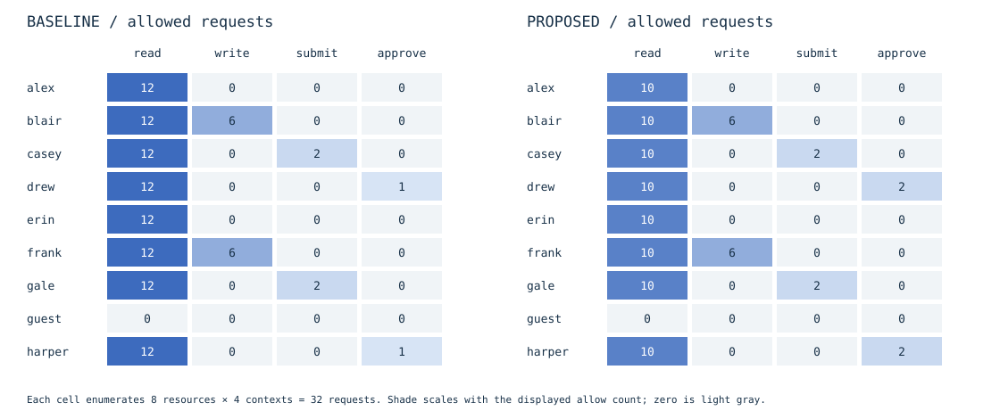

Access policy audit lab
Compare complete authorization outcomes for a custom role-and-attribute language, with concrete witnesses for every reported change category.
COMPLETE DOMAIN: 9 USERS × 4 ACTIONS × 8 RESOURCES × 4 CONTEXTS = 1,152 REQUESTS| Policy | Allowed | New grants | Revocations | Isolation failures | Role conflicts | Self-approval |
|---|---|---|---|---|---|---|
| baseline | 114 | 0 | 0 | 0 | 0 | 0 |
| proposed | 100 | 2 | 16 | 0 | 0 | 0 |
| unsafe-inherited-approval | 114 | 0 | 0 | 0 | 2 | 0 |
| unsafe-no-tenant-deny | 228 | 114 | 0 | 114 | 0 | 0 |
| unsafe-self-approval | 116 | 2 | 0 | 0 | 2 | 2 |
Authorization semantics
Role inheritance forms a validated DAG. Typed attributes support equality and inequality. All matching denies override all matching allows. A request with no matching allow is denied by default.
Independent comparison
All 5,760 request decisions and explanation paths match a separate evaluator that expands roles breadth-first and scans every rule.
The proposed policy has no configured isolation or separation-of-duty violations in this domain. That finite result is not an unbounded security proof or a recommendation to deploy it. Actual counts and timings
Two grants and sixteen revocations
The proposal removes the public-network approval deny, while retaining MFA and self-approval restrictions. It also adds a deny for restricted-resource reads on public networks. The resulting allow counts change from 114 to 100.

| Change category | Lexicographically first concrete witness | Before → after |
|---|---|---|
| Newly allowed | drew / approve / alpha-payment / public-mfa | explicit deny → allow |
| Newly denied | alex / read / alpha-payment / public-mfa | allow → explicit deny |
Witness order is the ascending subject/action/resource/context tuple, not a shortest execution trace. Every changed request · Grant explanation · Revocation explanation
A matching allow does not override a deny
| Matching rule | Effect | Explanation |
|---|---|---|
| allow-view | allow | editor → viewer; read matches; all resource kinds |
| deny-tenant-boundary | deny | subject.tenant = alpha; resource.tenant = beta; alpha ≠ beta |
No first-match rule ordering
Rule declaration order cannot change the result. The evaluator collects all matching rules and retains both allow and deny explanations. 222 baseline requests match at least one rule of each effect.
Validated inputs
Missing attributes, unknown actions/roles, invalid types, duplicate IDs and inheritance cycles are rejected before an authorization result is returned. Wildcard roles also match subjects with no assigned role.
Full baseline decisions with inheritance paths · Exact language and precedence specification
Removing the tenant boundary grants cross-tenant access
The unsafe-no-tenant-deny variant removes exactly one deny rule. Because role-based allows do not repeat the tenant predicate, the audit finds 114 cross-tenant grants.
| Policy | Matching allow | Matching deny | Decision |
|---|---|---|---|
| baseline | allow-view | deny-tenant-boundary | deny |
| unsafe-no-tenant-deny | allow-view | none | allow |
The independent audit constraint compares subject and resource tenants directly. It does not depend on the removed policy rule, so the policy change cannot remove the check that detects the violation.
subject.tenant = "alpha" resource.tenant = "beta" candidate.allowed = true isolation violation = true
This is the first witness in the complete declared tuple order. No real accounts or resources are accessed. Full before/after rule evaluation · All isolation witnesses
Inheritance conflicts can precede new grants
Adding approver to the roles inherited by requester gives Casey and Gale both sides of the configured exclusive pair. The self-approval deny still blocks their own payment approvals, so allow/deny outcomes remain unchanged.
| Policy | Requester inheritance | Static role conflicts | Self-approval grants |
|---|---|---|---|
| baseline | requester → viewer | 0 | 0 |
| unsafe-inherited-approval | requester → approver → viewer | 2 | 0 |
| unsafe-self-approval | same inheritance; self-approval deny removed | 2 | 2 |
After the second change removes deny-self-approval, allow-approve matches through requester → approver. The candidate grants Casey approval of Casey's own payment.
Static role conflicts and request-level self-approval are separate findings. The configured constraints detect violations; they do not secretly modify authorization decisions.
Inherited-role witness · Self-approval witness · All selected minimal witnesses
Complete within the declared request domain
| Dimension | Recorded | Implementation maximum |
|---|---|---|
| Users | 9 | 16 |
| Actions | 4 | 4 |
| Resources | 8 | 16 |
| Contexts | 4 | 4 |
| Requests per policy | 1,152 | 4,096 |
| Policy roles / rules | 4 / 8–9 | 16 / 32 |
Scope
The tool enumerates every user/action/resource/context combination, including combinations with no applicable allow rule. Oversized or invalid domains are rejected; requests are not sampled or silently skipped.
Language boundary
This is a custom offline language, not AWS IAM or another platform's policy semantics. JSON formatting may vary, but canonical token spelling is required to reject duplicate keys and ambiguous encodings.
npm ci --ignore-scripts npm run typecheck npm test npm run audit -- --output results-local npm run cli -- explain data/policies/proposed.json data/domain.json drew/approve/alpha-payment/public-mfa
An independent test compares 1,024 five-role DAGs × 32 assignment subsets = 32,768 role-closure/path cases with exhaustive path enumeration. All 5,760 recorded decisions also reconcile. Node v24.20.0, measured 2026-11-21T00:55:15.772Z. Input/source hashes · Method and limitations · Screenshots · Recording